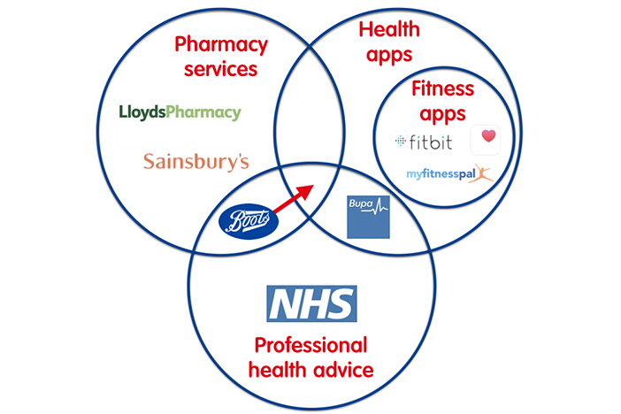
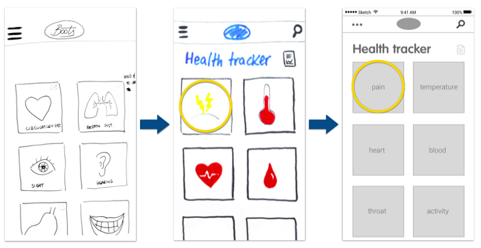
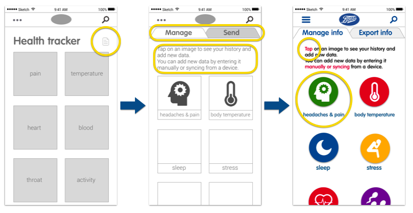
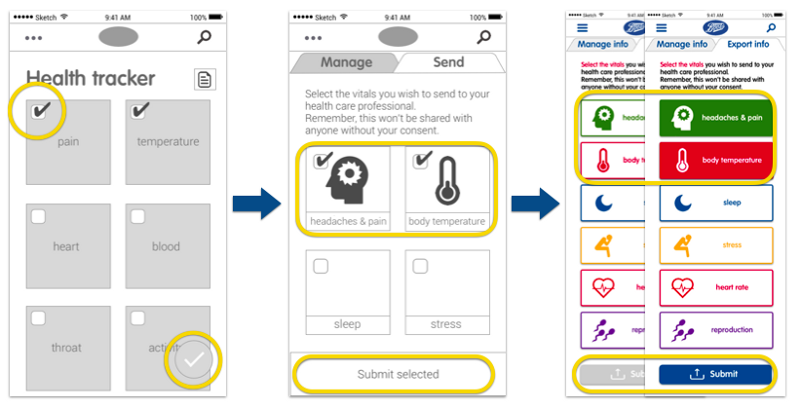
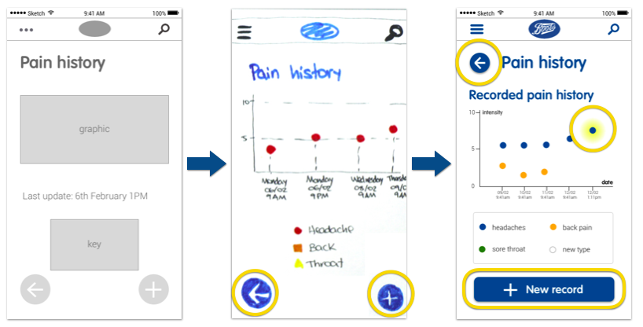

Boots Health Tracking App

Synopsis
Group project to build a new health tracking app for Boots that allows the customers to manage their health history and book appointments with their pharmacist, saving time to the users and lightening the NHS whilst creating engagement with the brand.
From the competitive analysis to the high fidelity prototypes, we absorbed the history and values of Boots to maintain the appearance and philosophy of this well-known company that has been giving pharmaceutical services to UK citizens since 1849.
The new Health Tracking App gives the user the opportunity to manage and update their health history, create customised health reports and share this information with their pharmacist, making easier for everyone to get a quick and reliable health care.
Skills
- Team work
- Time management
- Competitive analysis
- User research
- Creation of personas
- Prototyping
- Visual design
- Usability testing
Competitive analysis
There are many devices that track data and apps that manage it, but all of them are related to fitness, and fitness and health are not necessarily the same thing.

Currently, Boots offers pharmacy and professional health care services. After the development of this app, Boots would move to the centre of the diagram, giving a more complete service.
User research
Users are concerned about health and feel confident using the advice of a pharmacist.
“I feel very confident with pharmacists to prescribe me and give me information”
“I think pharmacists are better than doctors. Going to the doctor is always a rigmarole, confusing and time consuming”
“I hardly trust doctors because you never see the same doctor”
“I don’t use health trackers because I see those devices as fitness tools and I think fitness and health are not the same thing. I’m not interested on fitness.”
The user persona
The target for this app was vast. The persona brings together all the key aspects.

Matt is feeling unwell and wants to make sure he gets better before the busy weekend that’s coming up.
Problem statement
The opportunity
The users have trouble managing their health history and getting efficient medical help for minor ailments.
The solution
To create an app that allows the users to track and manage their health data and encourage them to seek help from the pharmacist.
Prototype
We used the colours and typography of the brand and considered that the users could feel unwell while using the app (having headaches, blurred vision, etc). We decided to use big buttons, clear iconography and terminology and a simple but friendly design in every screen.
   Clickable prototype
The high fidelity prototype follows this user journey: Matt has been suffering headaches the last few days and he has been tracking the intensity of the pain. He opens the app to add a new pain record.
Later, he feels feverish, so he uses the app to synchronise his smartwatch to the app and read his body temperature in real time. He realises his symptoms are indeed getting worse, so he creates a report about the evolution of his headache and his temperature and he sends it to his pharmacist to ask for advice.
Have a look at the latest version of our prototype here: